Mis Proyectos
Proyecto 1
CRUD Kotlin Room Ver más
proyecto específico se utilizaron diversas técnicas y tecnologías, tales como "binding" (enlazado de datos), null safety (seguridad de nulos), data classes (clases de datos) y ROOM (una biblioteca de persistencia de datos de Android) para el manejo de SQL mediante ORM (Mapeo Objeto-Relacional).
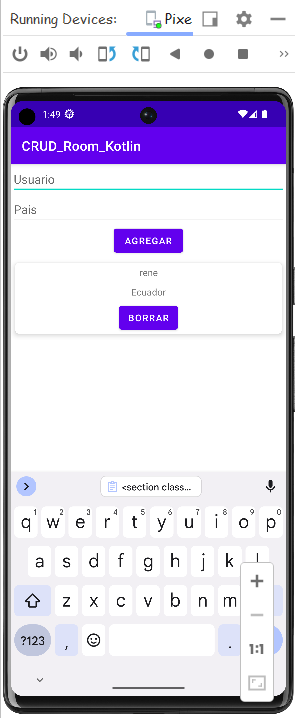
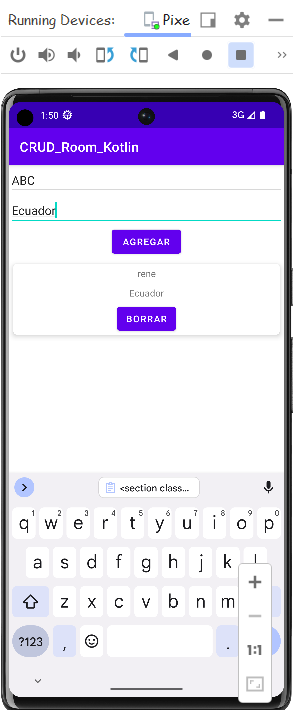
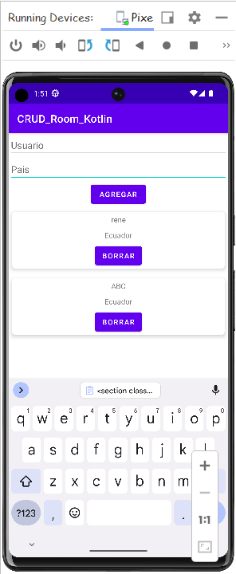
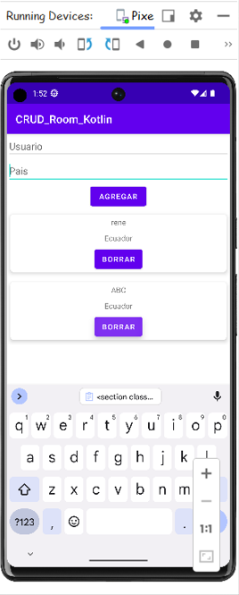
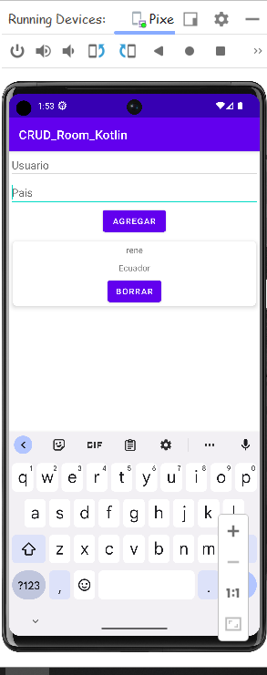
Proyecto 2
Calculadora INDICE MASA CORPORAL Ver más
Este proyecto se realizo con el unico fin de conocer mejor herramientas clave como binding y manejo de campos como progress bar, y podria decirse que tambien la realizacion de operaciones logicas sencillas en KT
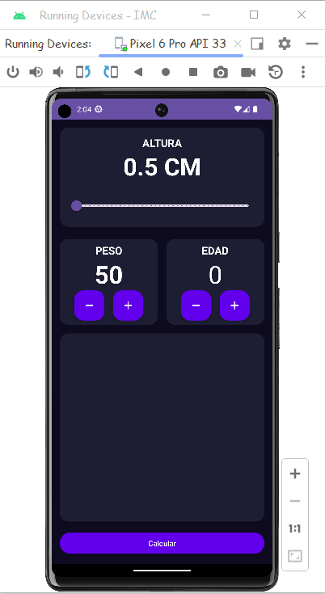
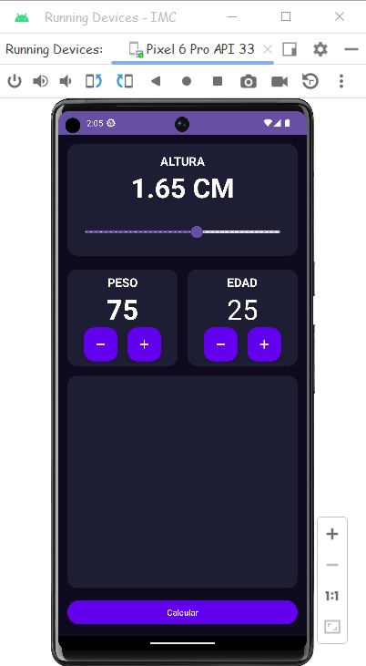
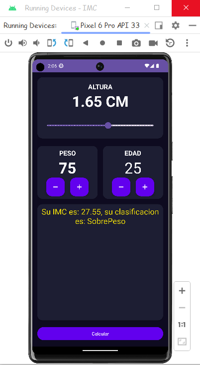
Proyecto 3
CRUD DJANGO Ver más
Con este proyecto se a reforzado los fundamentos de desarrollo web con Django, incluyendo la creación de aplicaciones, definición de modelos, configuración de URLs, utilización de formularios, integración con Bootstrap, manipulación de archivos estáticos y tratamiento de imágenes, entre otros conceptos clave.
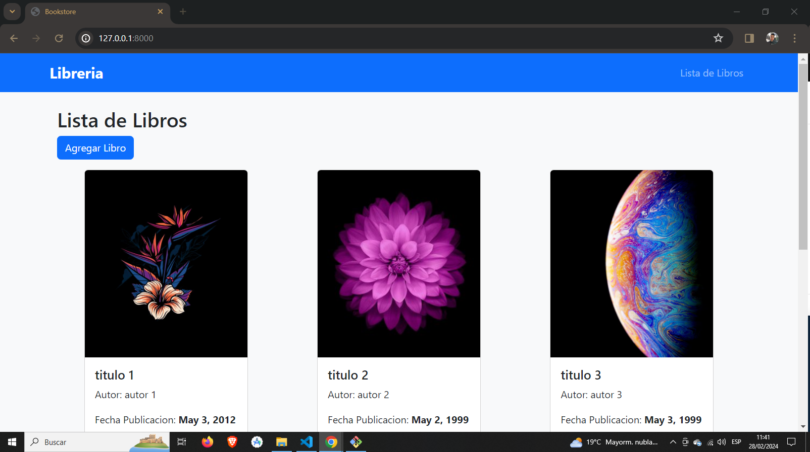
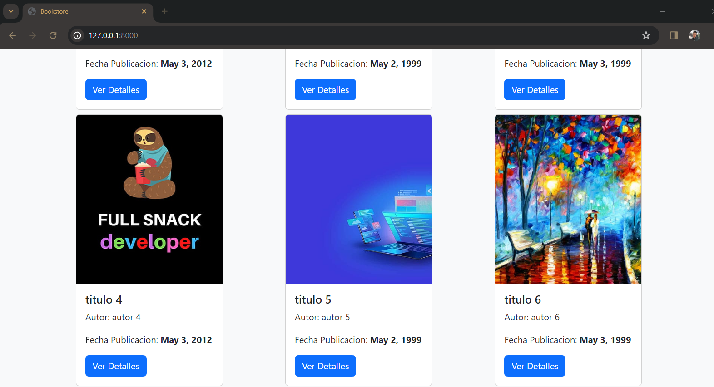
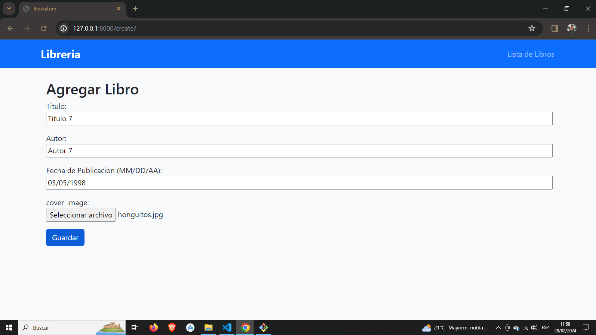
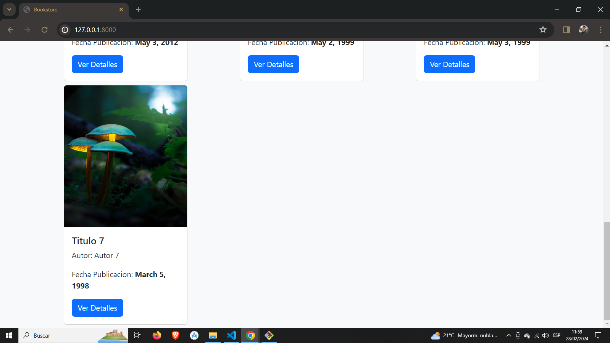
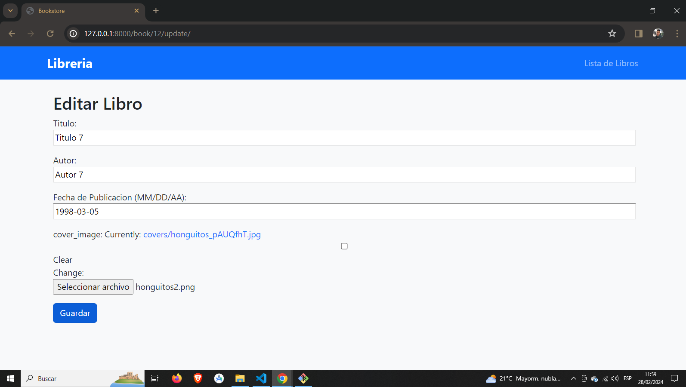
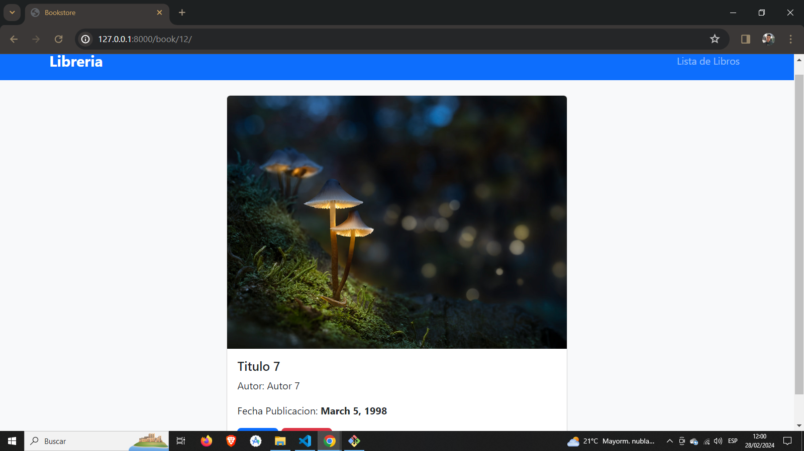